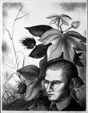

Editor's note: The Columbus Museum provided source material to Resource Library for the following article. If you have questions or comments regarding the source material, please contact the Columbus Museum directly through either this phone number or web address:
Two Columbus Legacies: Alma Thomas and Lamar Baker
November 13, 2004 - February 27, 2005
The Columbus Museum is paying tribute to the artistic achievements of Georgia natives Alma Thomas (1891-1978) and Lamar Baker (1908-1994) in the exhibition Two Columbus Legacies. The exhibit, on view in the Museum's Shorter-Leebern Gallery from November 14, 2004 to February 27, 2005, features approximately 100 prints, drawings and paintings by the two artists that are drawn from the Columbus Museum's extensive holdings.
Thomas' vibrant abstractions came to international prominence in 1972 when she became the first African-American woman to be awarded a solo exhibition at the Whitney Museum of American Art. Although influenced by earlier modern masters such as Matisse and Picasso, her work was perhaps more shaped by her fascination with the optical effects of pure color and with natural forms-especially flowers. Baker achieved national recognition for his socially and politically-charged prints, many of which depict African-American life in the South. The artist's images reflect his keen interest in gospel music as well as folk art and surrealism.
A special website for this exhibition has been developed. The site, which includes details about the artists, images, family activities and information for educators and students, can be accessed at a computer kiosk in the exhibition.
Alma Thomas and Lamar Baker were two exceptional artists who experienced firsthand the dramatic changes in the American art world during much of the twentieth century. Both were Southerners who established successful careers in major art centers in the North. Both became involved in art movements of national importance and drew their inspiration from direct observations of contemporary life. Both have ties to Columbus -- the city was Thomas' birthplace and the place in which the Atlanta-born Baker spent much of his later life. Beyond these few similarities, however, the two artists pursued remarkably different paths.
Alma Thomas was a woman of color who escaped racial prejudices in the South by moving to Washington, DC, where she eventually became a prominent abstract painter. Thomas rejected the notion of painting stereotypically "black" subjects and instead embraced modernism in her quest to develop a universal language of color and form. The primary inspiration for the artist's luminous abstractions was the natural beauty she sought in outdoor settings, especially flower gardens.
Although white, Lamar Baker made regular trips from his studio in New York City to Atlanta, where he depicted with great conviction and detail such topics as political corruption, social injustice, poverty and, above all, the difficult circumstances of African American life in the South -- the same factors that had driven Alma Thomas to leave Columbus as a teenager in 1907. In fact, influential curator and critic Carl Zigrosser once referred to him as "one of the first native artists to reckon with the problems of the new South." Unlike Thomas, Baker employed a clear, narrative style, remained highly suspicious of avant garde art movements, and produced his most inspired work early in his career between 1935 and 1945. Alma Thomas, however, was a fiercely modern artist who did not reach her full potential as an artist until age 68 -- after she retired from teaching and devoted her full-time energies to painting. (right: Lamar Baker, Self-Portrait with Cotton Plant, 1940, lithograph, 11 3/4 x 9 inches. Museum purchase)
Featuring nearly 100 objects, Two Legacies celebrates the Columbus Museum's extensive holdings by Thomas and Baker, and focuses special attention on their works on paper. Both artists considered paper an important and versatile support material for their artistic creations in a variety of media. For Thomas, watercolor and gouache were principal modes of experimentation and she relished the watery washes of translucent color as well as the dense, controlled color shapes that these media afforded. Baker created numerous drawings and watercolors, but produced much of his most compelling and inspired work in the form of lithographic prints (made by drawing in greasy crayon on a fine grained stone that is moistened with water, rubbed with an oily ink that adheres to the dry waxy marks only, and then run through a press).
This exhibition represents the first time the bulk of the Columbus Museum's holdings by the two artists have been shown, and the first time they have been presented together. The Museum is grateful to the late Miss John Maurice Thomas and the family of Alma Thomas for its important gift of what certainly stands as one of the largest collections of Thomas's works on paper. In addition, the Museum acknowledges the generosity of Lamar Baker, who bequeathed the prints, paintings and drawings in what now represents the most extensive body of Baker's work in existence.
This exhibit is sponsored by generous funding from the Fifth Generation Foundation.
On Saturday, February 12, from 2:30-4:30 p.m., visitors may view films about African-American artists, including Alma Thomas: A Life in Art. This free program is open to all ages.
Editor's note: RL readers may read more about Lamar Baker in Section 5 of Tales from the Easel: Nineteenth- and Twentieth-Century American Narrative Paintings, circa 1800-1950 by Dr. Charles C. Eldredge
Read more articles and essays concerning this institutional source by visiting the sub-index page for the Columbus Museum in Resource Library.
Visit the Table of Contents for Resource Library for thousands of articles and essays on American art, calendars, and much more.
Copyright 2003, 2004 Traditional Fine Arts Organization, Inc., an Arizona nonprofit corporation. All rights reserved.